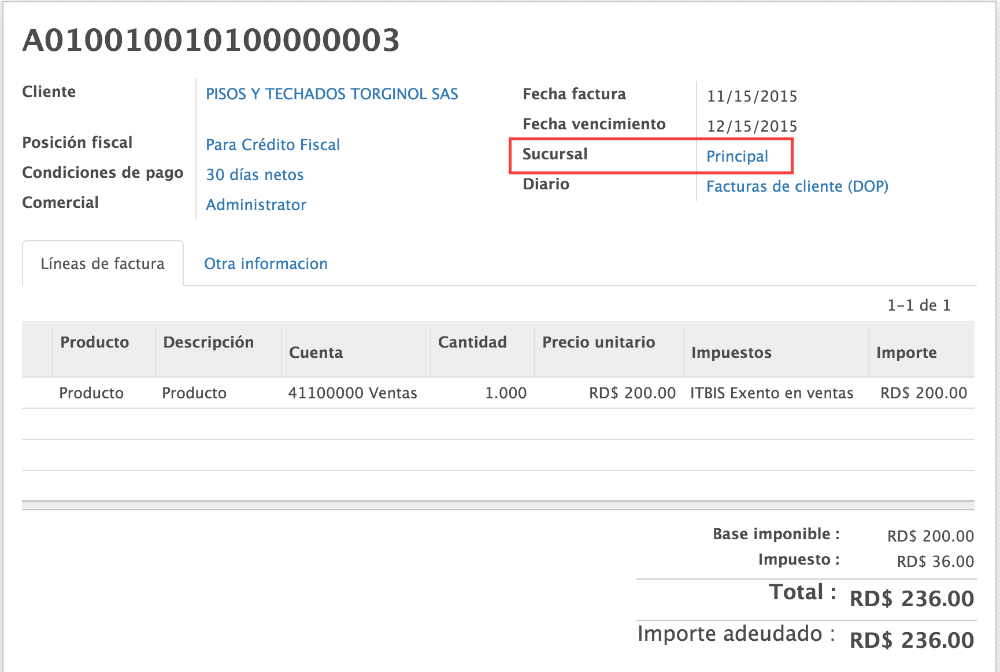

<section class="oe_container">
    <div class="oe_row oe_spaced">
        <div class="oe_span12">
            <h2 class="oe_slogan">NCF POR SUCURSALES</h2>

            <h3 class="oe_slogan">Administracion de n&#250;meros de comprobantes fiscales por sucursales.</h3>
        </div>
        <div class="oe_span6">
            <div class="oe_demo oe_picture oe_screenshot">
                
            </div>
        </div>
        <div class="oe_span6">
            <p class="oe_mt32">
                De una forma simple puede configurar sus n&#250;meros de comprobantes fiscales por sucursales y asignar los
                usuarios que pueden utilizar esta secuencia, solo tendra que crear las sucursales asignar los diarios
                correspondientes a y definir que usuarior pueden usar esta sucursal..


                Ademas de muchas otras funcionalidades.
                Permite administrar y configurar comprobantes fiscales ademas de generara los reportes
                606,607,608 y 609

                Info <a src="https://github.com/odoo-dominicana">Odoo Dominicana</a>
            </p>
        </div>
    </div>
</section>